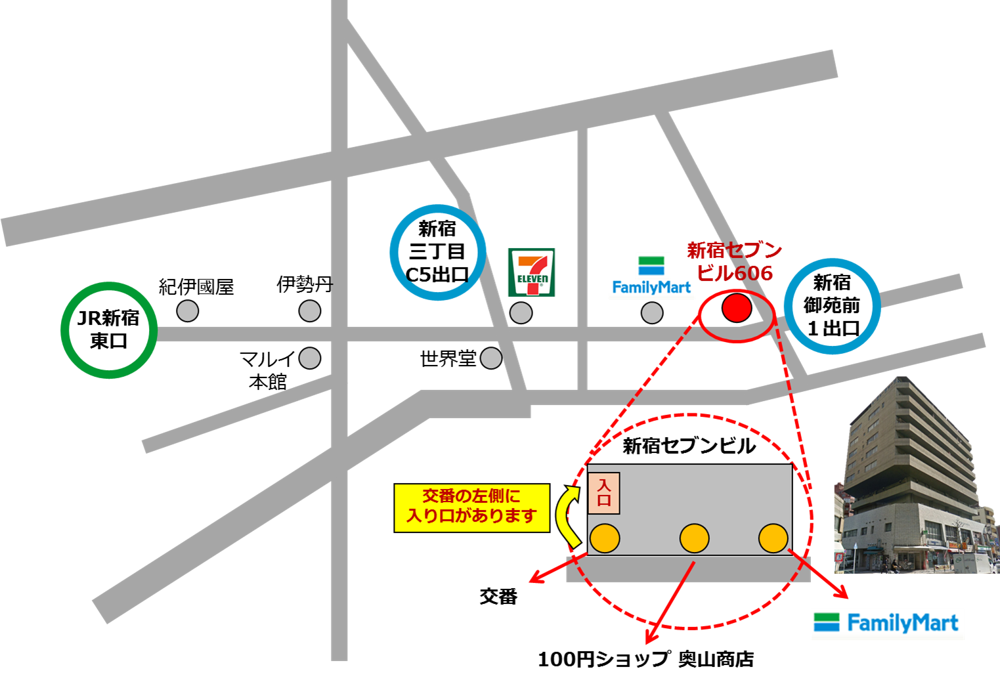
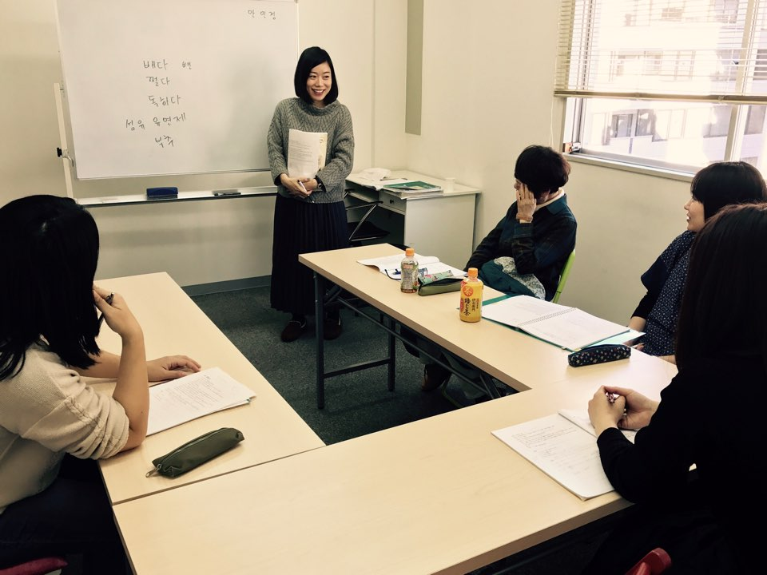
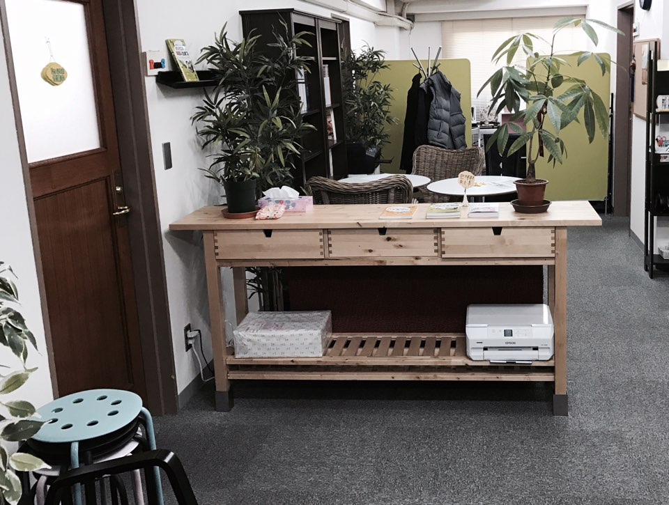
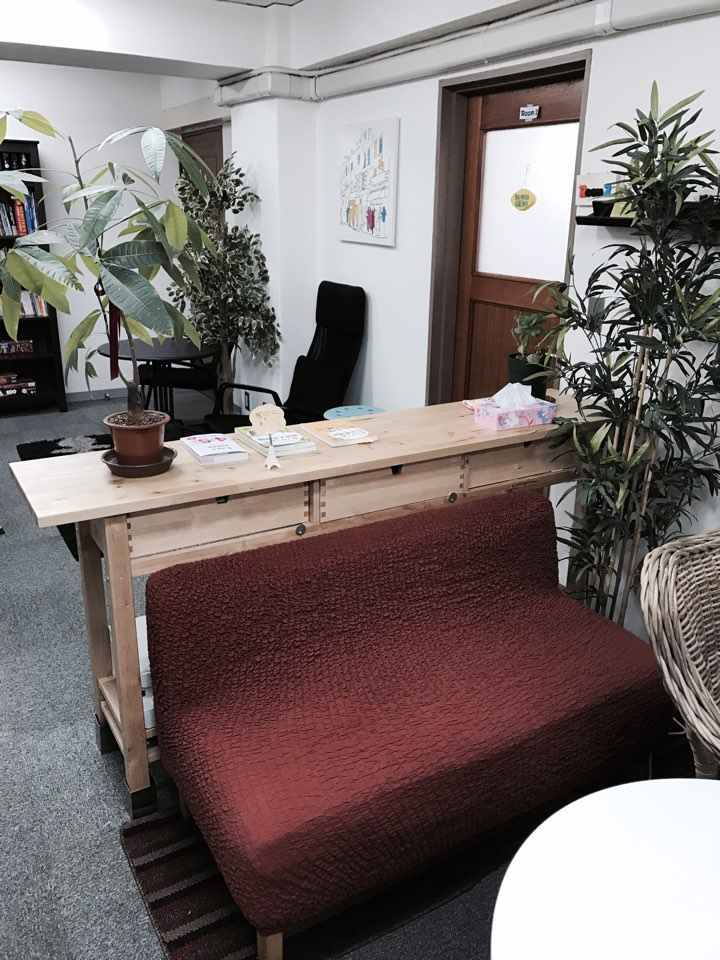
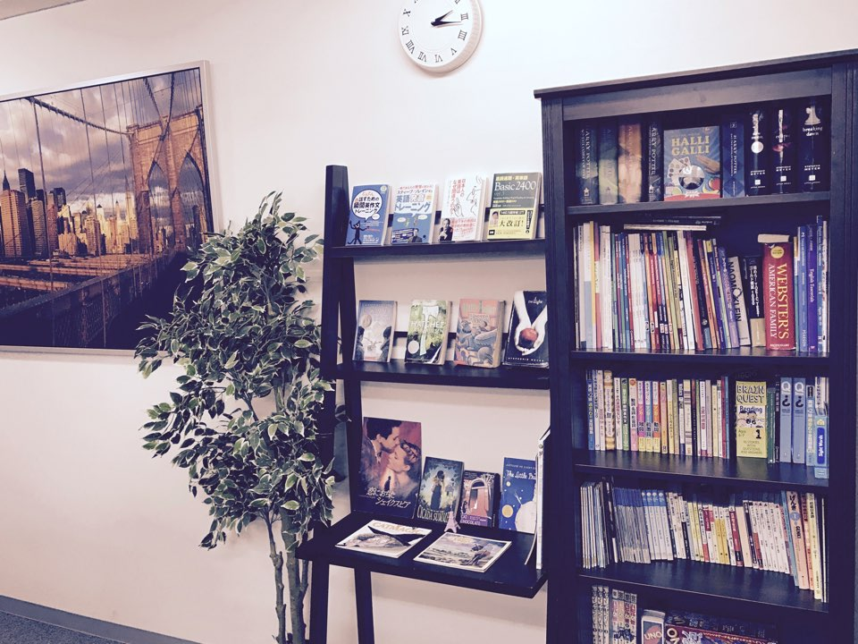
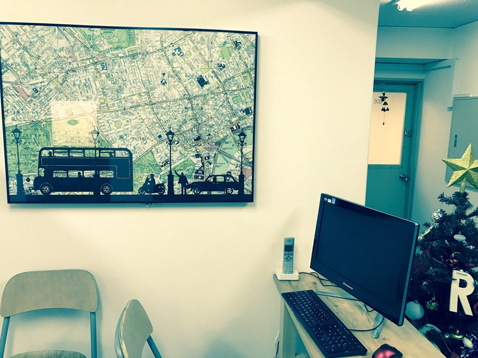
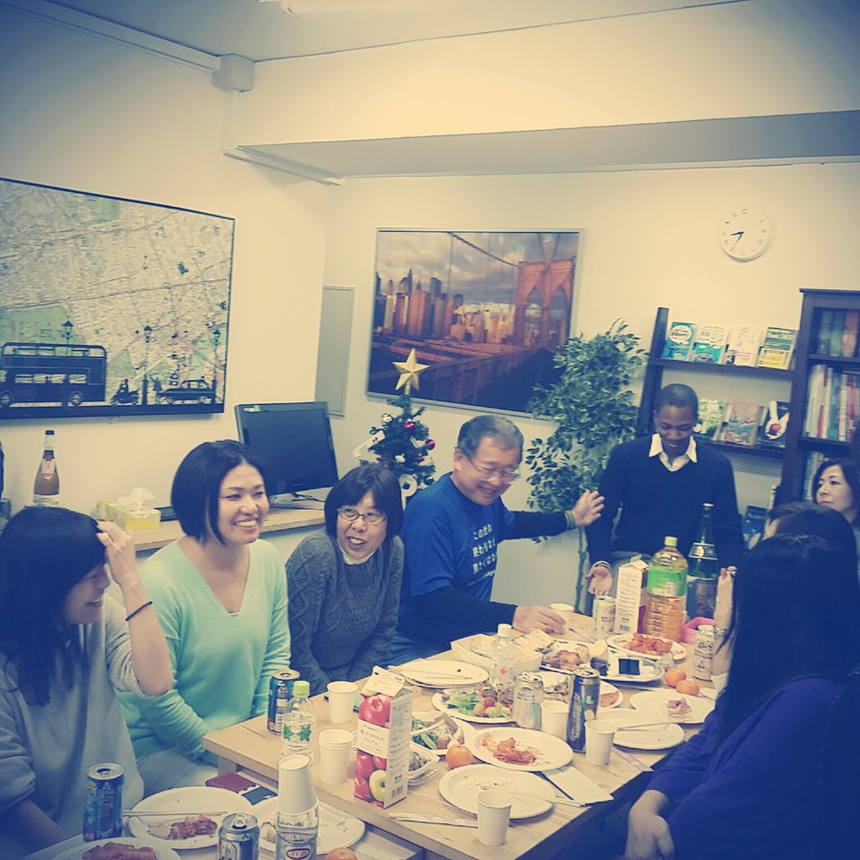
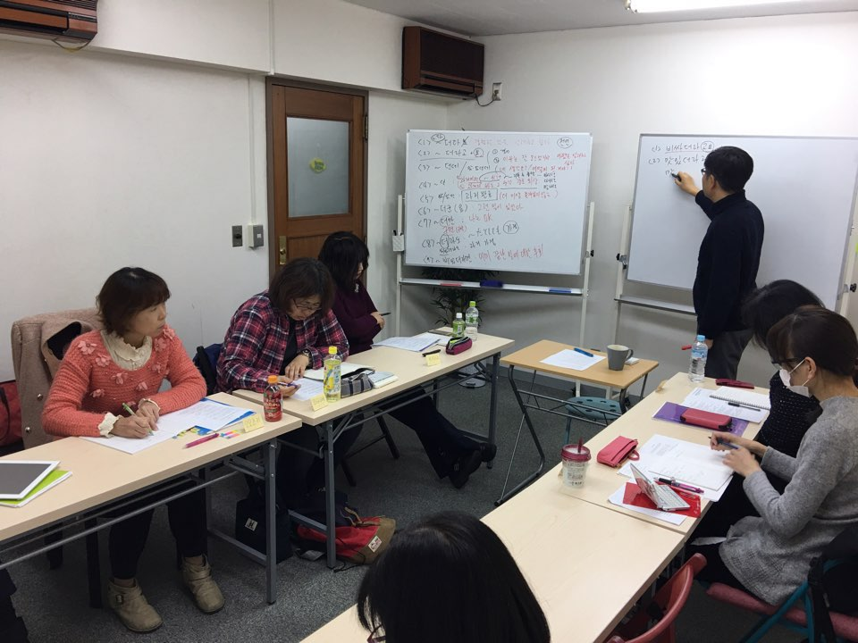
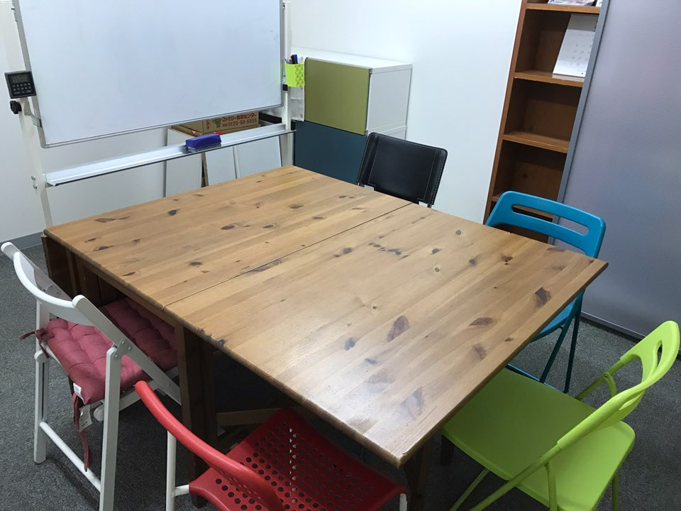

ミリネ重要レッスン
ミリネ重要レッスンのコンテンツ部分
会社概要・アクセス・講師
ミリネ韓国語教室の会社情報、アクセス、講師紹介です。
個人レッスンは都合に合わせて予約し、マイペースで勉強できます。
| 社名 | 株式会社 カオンヌリ |
|---|---|
| 設立年月日 | 2010年11月19日 |
| 代表取締役 | 金玄謹 |
| 事務所 所在地 | 〒160-0022 東京都新宿区新宿2-8-1新宿セブンビル606号 |
| 業務内容 | 韓国語の授業・通訳・翻訳・作文添削 海外業務提携, 韓国「엑스포츠 뉴스」の芸能ニュースコンテンツ翻訳・日本販売総代理店(参考：https://www.k-insider.com/、https://www.xportsnews.com/ ) |
| メール | mirinae@kaonnuri.com |
| 連絡先 | TEL 03-5925-8245 / FAX 03-5925-8249 |
| 口座 | 三井住友銀行 日暮里支店 普通 7961777 (株) カオンヌリ ゆうちょ銀行(郵便局) 記号: 10190 番号: 90647671 カ) カオンヌリ |
『新宿教室』
〒160-0022 新宿区新宿2-8-1新宿セブンビル606号
TEL: 03) 5925-8245
JR新宿駅からのMAP
➡JR新宿駅から徒歩10分
➡地下鉄(都営新宿線、副都心線、丸の内線)新宿3丁目駅から徒歩3分
➡丸の内線、新宿御苑前駅から徒歩1分
■ JR新宿駅からの行き方(TEL: 03-5925-8245)

教室の様子








『韓国語講師』
| 院長 | 金 玄謹（キム・ヒョングン） |
|---|---|
| 講師歴 | 2004年～ |
| 経歴 | 韓国語講師、韓国語翻訳添削 |
| 書籍 | 『도쿄를 알면 일본어가 보인다1』21세기북스, 2008年 『도쿄를 알면 일본어가 보인다2』21세기북스, 2010年 『일본어 회화패턴 BEST100Ⅰ』21세기북스, 2008年 『일본어 회화표현 BEST100Ⅱ』21세기북스, 2009年 『タングニの日本生活記』白水社、2015年 『タングニの韓国人生劇場』白水社、2016年 『クイズで学ぶ韓国語』あさ出版、2021年 『ゼロから完全攻略！ 韓国語能力試験 TOPIKⅠ』新生出版社 『ゼロから完全攻略！ 韓国語能力試験 TOPIKⅡ』 新生出版社、2024年 『123！韓国語 入門』 HANA、 2024年 『123！韓国語 初中級』 HANA、 2025年 |
| 一言 | 시작이 반이다・継続は力なり |
| 名前 | 朴 多貞 (パク・ダジョン) |
|---|---|
| 講師歴 | 2014年～ |
| 経歴 | 東京外国語大学日本語専攻、韓国語講師 |
| 資格 | 日本語能力試験1級 |
| 一言 | 韓国や韓国語に興味をもっていた友達が周りにいたのがきっかけで韓国語を教えることに興味を持つようになりました。 みなさんと同じく、言葉を学習する立場でもあるので、 より分かりやすく教えていきたいと思っております |
| 名前 | 安 ミンジョン（アン・ミンジョン） |
|---|---|
| 講師歴 | 2011年～ |
| 経歴 | 韓国のテレビ局、記者、芸能事務所、韓国語講師 韓国語教員資格2級 |
| 書籍 | 『森ガールと草食男の世界、東京』（チャンへ出版社2010年） 『日本のお母さんの力』（hwangsobooks 2015年） 『ゼロから完全攻略！ 韓国語能力試験 TOPIKⅡ』 2024年 |
| 一言 | 語学の王道は毎日のコツコツが第一！皆さんの努力を応援してサポートいたします！ |
| 名前 | 申 廣徳（シン カンドク） |
|---|---|
| 講師歴 | 2009年～ |
| 経歴 | 韓国語講師、読売カルチャー、インカルチャーの講師 |
| 資格 | 韓国語教員免許2級 |
| 一言 | 新しいチャレンジは新しい出会いが待っていますし、世界が広がります。 |
| 名前 | 孫 秀賢（ソン・スヒョン） |
|---|---|
| 講師歴 | 2022年～ |
| 経歴 | 日本女子大学 人間社会学部 文化学科卒業 |
| 資格 | 韓国語教員資格2級 日本語能力試験1級 |
書籍 | 『ゼロから完全攻略！ 韓国語能力試験 TOPIKⅠ』 2024年 |
| 一言 | 何かに夢中になれることは素敵なことです。 韓国語を通してもっと豊かな人生にしませんか？ |
| 名前 | 李 姃姸 （リ・ジョンヨン） |
|---|---|
| 講師歴 | 2023年～ |
| 経歴 | 日語日文学科 卒業 |
| 資格 | 日本語能力試験N1 日本語教師養成講座420時間修了 日本語講師 韓国語教員資格2級 |
| 一言 | 韓国語は難しい!’から‘韓国語は楽しい！’となるよう楽しい韓国語を目指して一緒に頑張りませんか |
| 名前 | 池上智子 |
|---|---|
| 講師歴 | 2019年～ |
| 経歴 | 東京外国語大学国際社会学部朝鮮語専攻卒、韓国語講師 |
| 資格 | TOPIK 6級 日本語教育能力試験(日本語教師資格保持) TOEIC スコア970 |
| 一言 | 韓国語学習を通して言語だけではなく、韓国の文化や人々を深く知ることができ、日々新しい発見があるのが面白いところだと思います。 同じ韓国語学習者の目線から分かりやすく、楽しい授業を心がけていきます！ |
ミリネ教室右側コンテンツ
上級２対面講座
テキストでは学べないミリネだけの週末のプチ留学！

毎月
１週目・3週目
土曜日

詳細は
こちらへ
オンライン個人レッスン
表現力をアップ

個人lessonで
表現力UP

詳細は
こちらへ
オンライン上級講座